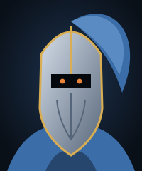

Sobre o Herói

Gale foi o mais jovem cavaleiro da Ordem da Lanterna. Quando o Abismo Cinzento engoliu a Ponte Velha, ele desceu sozinho para buscar os feridos e voltou sem se corromper. Desde então, caminha pelas estradas esquecidas protegendo viajantes e acendendo fogueiras onde outros só veem ruínas.
Sua armadura azul está marcada por mil batalhas, mas a mão que segura o espadão nunca se ergueu contra quem pediu abrigo.
Antes de vestir a armadura azul, Gale era o escudeiro que subia as torres da Ordem ao entardecer para acender as lanternas. Foi ali que aprendeu que uma luz pequena, mantida com cuidado, guia mais gente do que uma espada afiada.
Na descida ao Abismo Cinzento, a escuridão tentou convencê-lo de que ninguém mais respirava lá embaixo. Gale respondeu acendendo a primeira fogueira. Os feridos seguiram a chama até a superfície, e a Chama Pálida passou a acompanhá-lo desde então.
Ao deixar a Ordem, jurou nunca cobrar nada de quem encontrasse em perigo. O anel em seu dedo guarda essa promessa, e o lema que repete antes de cada viagem guarda o resto: nenhuma chama se apaga sozinha.
- Classe
- Cavaleiro Guardião
- Origem
- Ordem da Lanterna
- Nível
- 42
- Lema
- Nenhuma chama se apaga sozinha.
Atributos & Habilidades
Experiência
Nível 42
40 / 100 XP
- Força85
- Defesa90
- Vitalidade80
- Velocidade55
- Magia30
- Fé70
Habilidades
- Investida do Alvorecer: um golpe amplo que empurra os inimigos para longe dos aliados.
- Muralha Azul: ergue o escudo e protege quem estiver atrás dele.
- Chama Pálida: uma brasa que cura os feridos ao redor.
Inventário & Conquistas
Contato com a Guilda
Precisa de um escudo na estrada? Envie um chamado ao Gale.
Prefere outro caminho? Encontre a Guilda nas redes.